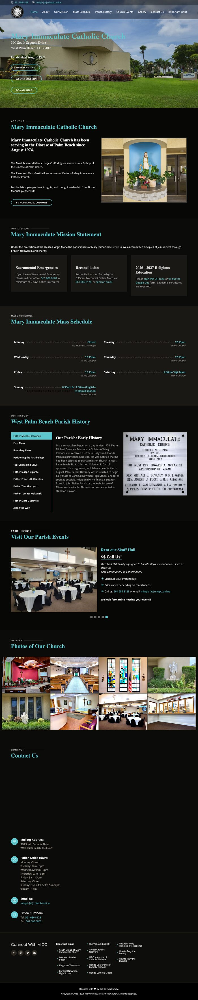
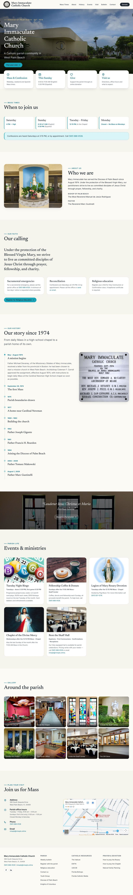
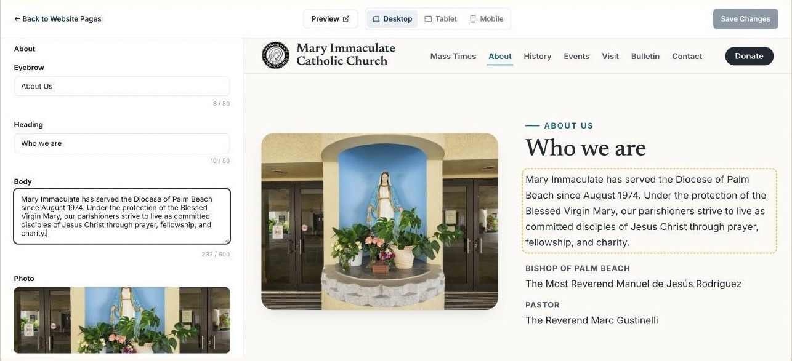
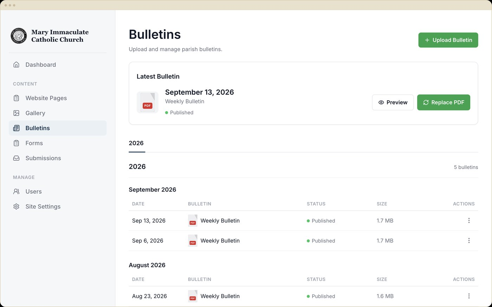
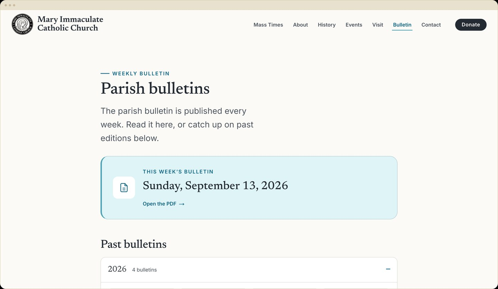
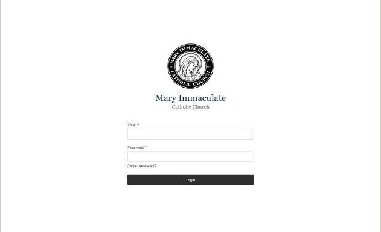
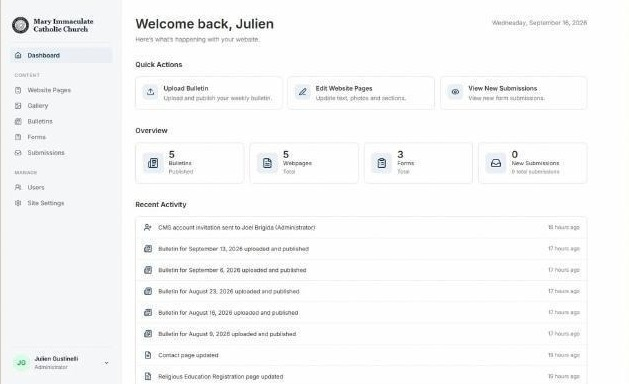

How Mary Immaculate Put Its Website on Complete Autopilot
A parish-branded content management system that replaced years of hand-edited HTML and a shared Google Drive folder with a site the front office runs entirely on its own. No developer required.
The Challenge
Mary Immaculate's old site at miwpb.online was hand-built years earlier and never really changed after that, because changing it meant editing raw HTML. A new Mass time, a fresh photo, an updated staff bio: all of it meant calling a developer and waiting.
The weekly bulletin lived on a shared Google Drive folder the office had to remember to re-share every week. Registration forms lived on a separate Google Form. None of these systems talked to each other, and there was no single place to see who had signed up for anything.
On top of that, the parish was routing online donations through a processor charging 2.9% + $0.45 per card transaction and 1% + $0.45 per ACH transfer — a real, recurring cost for a parish in need of funds.
The Solution
The engagement covered three things. First, a full front-end revamp: the public site rebuilt from scratch and fully branded to Mary Immaculate, down to its own seal, colors, and voice.
Second, an audit of the parish's site, hosting, and recurring cost drivers, including the card-processing fees on their donation platform, so the office could see exactly what it was paying for and where a fee-free alternative made sense.
Third, a whole new back end that outlasts any single redesign: built from the ground up on Shepherd, LexAi's parish content platform, and made simple enough for non-technical clergy and administrative staff to run themselves. Every section of the public site is backed by a real admin the office logs into directly. The parish's scattered forms were brought into that same system, and no routine change requires a ticket to us.
The Same Content, a Completely Different Experience
Same parish, same photos. A public site people can use, and an admin staff can run. The redesign brought the site up to today's UI/UX standards: clean typographic hierarchy, generous whitespace, and interface patterns people already know from the apps they use every day, in place of a dated, cluttered template.


Julien and Eric completely transformed our parish site, and the timing couldn't matter more. So many people find us online before they ever walk through our doors, and our old site just wasn't representing us well. Now it looks professional, and for the first time, I can update it myself without feeling lost. This was exactly the kind of help we needed.
A Parish That No Longer Waits on a Developer
For years, any change to the site, big or small, meant emailing whoever built it and waiting for a response. The new CMS now puts all of that directly in the parish's hands. Staff log in, make the change themselves, and it's live immediately, with no code, no developer on call, and no gap between deciding something and publishing it.
To that end, every feature below exists to close a specific gap the old site left open.
Live Homepage Editor
Split-screen editing: type on the left, watch the real public page update on the right, publish when it's ready. No code, and no separate preview step to second-guess.
One-Click Bulletin Publishing
Upload this week's PDF from the dashboard and it's live under "This week's bulletin," auto-filed into a dated archive. No more re-sharing a Drive link.
Forms & Submissions Inbox
Parish registration, Religious Education sign-up, and a new Contact Us form all route into one Submissions screen instead of a form nobody remembers to check.
Role-Based Staff Accounts
The pastor, front-office staff, and diocesan reviewers each get their own login and permission level, so every change is attributed instead of made through one shared password.
Photo Gallery with Lightbox
The parish's own photos, in a responsive grid with a captioned lightbox. Arrow keys or swipe to browse, and staff can reorder the whole set from the admin.
Fee-Free Donations (Recommended)
Steered the parish away from a roughly 3%-per-transaction processor toward Zeffy and Givebutter, platforms built for non-profits that charge nothing at all.
Mobile-First, Responsive
Built and tested at phone width from day one, since most parishioners check Mass times from their phone.
Push-to-Publish Hosting
Every update deploys automatically. No server to maintain, no manual release step, no downtime for routine changes.
Live Homepage Editor
Every homepage section, from the hero photo to the Mass times card, lives in this one editor. Staff type on the left and watch the real public page update on the right as they go, checking the desktop, tablet, and mobile views before publishing, so nothing ever goes live looking broken on someone's phone.

One-Click Bulletin Publishing
Publishing the week's bulletin used to mean re-sharing a Google Drive link and hoping people found it. Now the office uploads the PDF, sets the bulletin date, and it's live under "This week's bulletin" in under 25 seconds, automatically filed into a dated archive that both staff and visitors can browse.


A Login That Feels Like Part of the Parish
There's no developer dashboard and no unfamiliar software branding to learn. The login screen carries Mary Immaculate's own seal and name, so it feels like part of the parish from the first click, not a third-party tool bolted onto the site. From there, staff land on a dashboard written in plain English, with quick actions and a live activity feed right where they land.


Where the Parish Landed
Moving off hand-edited HTML changed more than the look of the site. It gave the parish control over a part of its operations that had long depended on outside help. Weekly bulletins, content updates, forms, photos, and staff access now live in one system the front office can manage itself, without developer handoffs, recurring platform fees, or disconnected tools. The redesign changed what parishioners see, and the CMS changed what the parish can do by shifting the paradigm from one of dependency to ownership.
| Metric | Before | After |
|---|---|---|
| Publishing the weekly bulletin | Re-share a Google Drive link | Upload & publish in under 25 seconds |
| Text or photo updates | Call a developer, wait | Office edits directly, live preview |
| Registration & contact forms | Scattered across Google Forms | One CMS, one submissions inbox |
| Donation processing fees | ~2.9% + $0.45 per card transaction | Recommended fee-free processors |
| Mobile experience | Not responsive | Fully responsive, mobile-first |
| Photo gallery | Static grid, no enlarge | Captioned lightbox, swipe & keyboard nav |
| Staff access | Informal, shared access | Individual, role-based logins |
| Site ownership | Locked to a developer | Fully parish-owned CMS |
The biggest change LexAi made wasn't just the website, it was giving me back hours of my time, week after week. I used to be the only one who could make updates. Now our admin and Father Marc handle everything themselves through a CMS that's genuinely easy to use. Add in a front-end that looks fantastic, and it's been a win on every front. Bonus points: they also showed us a way to cut our donation platform cost to zero.
Want This for Your Parish?
LexAi builds and maintains parish-branded content systems like this one, from a full front-end redesign to a CMS your own staff can run without a developer on call.
Book a Call →